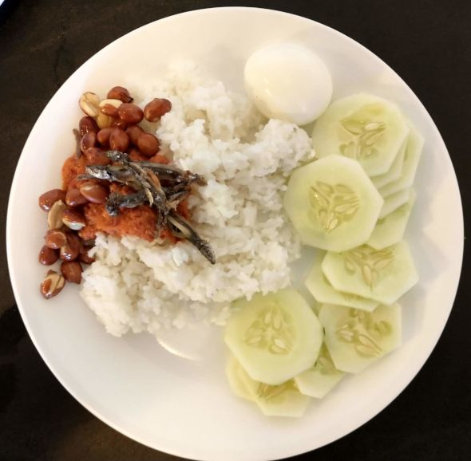

Nasi Lemak

Description
Nasi lemak is a Malaysian dish consisting of rice cooked with coconut milk
and typically served with sambal, fried crispy anchovies, toasted peanuts,
freshly cut cucumber and a hard-boiled egg. It is considered to be
the national dish of Malaysia, thus a good nasi lemak recipe is a source
of pride among Malaysians.
Ingredients
Yield: 4 people
Coconut milk steamed rice
- 2 cups rice
- 1 can coconut milk
- 1 cup water
- salt to taste
Dried anchovies sambal (sambal ikan bilis)
- 1 cup dried anchovies (ikan bilis)
- 1/2 red onion
- 4 shallots
- 1 clove garlic
- 10 dried chillies
- 1 teaspoon shrimp paste (belacan)
- 1/4 teaspoon salt
- 1 tablespoon sugar
Other ingredients
- 2 hard-boiled eggs
- 1 small cucumber
Steps
-
Rinse and drain your rice, then add coconut milk, a pinch of salt and
some water, and cook the rice.
-
Rinse and drain the dried anchovies, then fry them until they turn
light brown. After that, put them aside.
-
Blend shrimp paste with shallots, garlic and dried chillies in a food blender.
You can also use pestle and mortar to pound them. Slice red onion into rings.
-
Heat oil in a pan and fry the spice paste until fragrant, then add the onion rings
and the anchovies and make sure to stir well. Add salt and sugar. Simmer on
low heat until the gravy thickens. Set aside.
-
Slice small cucumber however you like. Cut the hard-boiled eggs in half.
Dish up the steamed coconut milk rice and top it with some dried anchovies sambal.
Serve with freshly sliced cucumber and hard-boiled eggs.